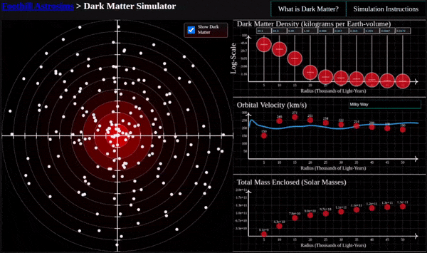
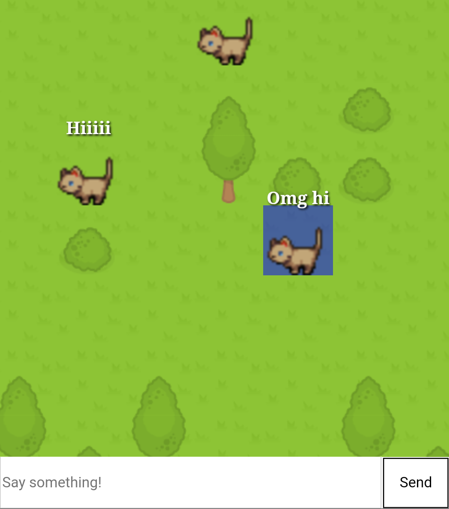

Vulkan Engine (In-Progress)
I am currently working on making a experimental rendering engine using the Vulkan API, to make use of newer GPU features such as hardware accelerated raytracing
Dark Matter Simulation
An education web browser simulation for college Astronomy classes used to learn about dark matter, and how it affects the velocity of stars in a galaxy! The simulation features real data from published observations to show how stars in galaxies are moving more quickly than expected, and how dark matter can be used to explain why.
Tilegame Client and Server
2D chatroom where everybody is a cat! Chat bubbles appear over your head and you can walk around a small tile-based map. Find out more from the Overview:
Balloon Jump Game
Arcade-style browser game, works well on touchscreens and mobile devices as well as desktops. At least one person other than myself described it as "pretty fun", therefore I am proud of making it.